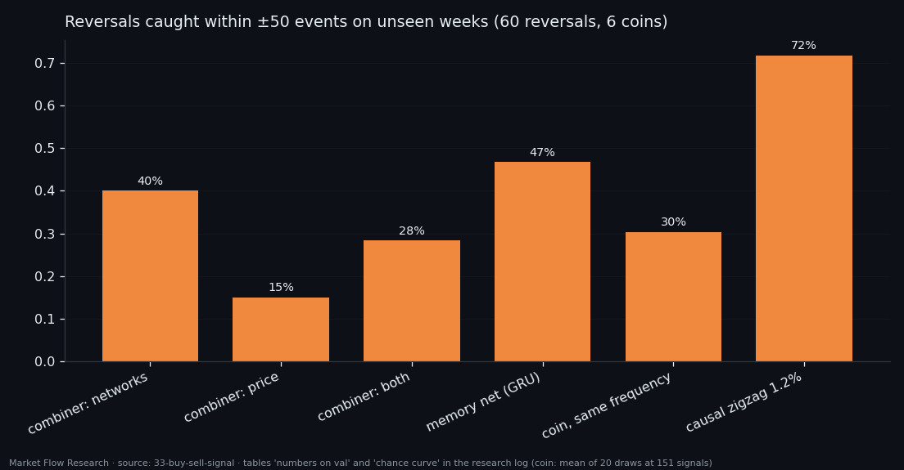
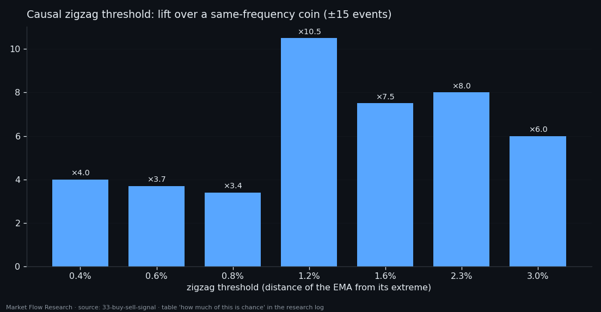
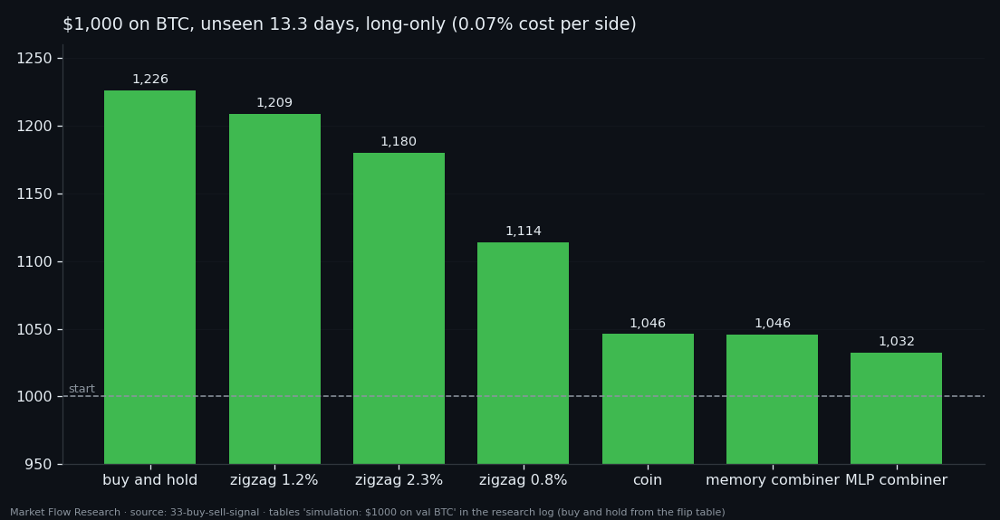
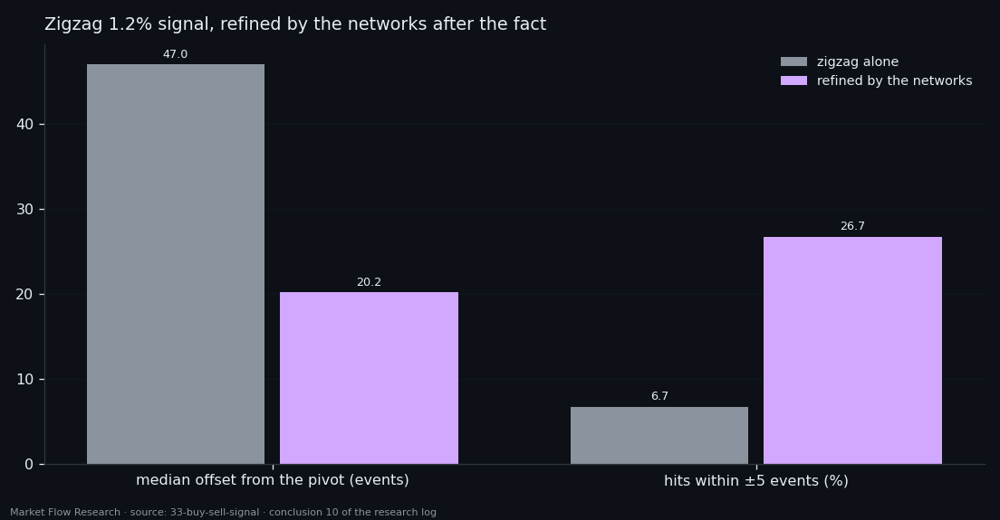

Can Our Networks' Outputs Become a Buy/Sell Signal? A Simple 1.2% Zigzag Says No
In shortOur networks each say something about a leg: it is ending, it is 80% done, this is a reversal zone. None says "buy" or "sell". So we combined their outputs into one decision and raced it against three rivals: each channel alone, a coin with the same number of signals, and a causal 1.2% zigzag on the same price. The combination found 40% of reversals within ±50 events — where chance at that frequency finds 30%. The plain zigzag found 72%. With $1,000 on BTC, the networks ended level with the coin; the zigzag ended next to buy-and-hold. What the networks do know is where a reversal was.
① The race: combiner vs chance vs a simple rule
The inputs are the outputs of the approved networks laid on one timeline per coin: legtooth and legline (where in the leg), hazard100 and hazard4 (a pivot soon), and the pivot and correction zones. Six coins, 412,811 events, 718 reversals of the 2.3% zigzag on EMA-10 (607 train, 111 later). The target zone is asymmetric — 50 events before a reversal and 15 after — because an early signal can still be traded, a late one cannot.
Three rivals stand next to the combiner, so that "it adds nothing" shows up as a number. On the unseen weeks (60 reversals): an MLP combiner of the network outputs gives 151 signals and catches 40.0% within ±50 events. That looks decent until the chance curve is drawn — a coin with 151 signals catches 30.3% on average over 20 draws. So the combiner is ×1.3 chance. On price features alone it is worse (15%), both together worse still (28%). A causal 1.2% zigzag on the same price — no model at all — catches 71.7% with 136 signals and is the only rule that gains on the move (+1.20% of the series' move, the combiner −0.99%).
The chance curve is compulsory reading for every table in this study: 40% at 151 signals and 40% at 60 signals are very different results (chance: 30.3% and 12.3%).

② Why the combiner has nothing to combine
The breakdown of the channels explains the failure. None of them carries direction (AUC 0.33–0.47 for up versus down). They duplicate each other (Spearman up to 1.00). And their level drifts between train and validation. A classifier of events has nothing to build a decision from that its input does not contain.
Memory helped somewhat: a GRU along the event sequence on 11 instantaneous numbers keeps ×2.2–2.4 over chance where the combiner keeps ×1.3–1.7, and catches 46.7% within ±50 on 93 signals. Its move is still negative (−2.86%), and its learning curve stays flat for 20 epochs — the bottleneck is not the architecture. LSTM versus GRU is within noise (8 pivots swap their order). Defining the reversal zone as a share of the leg (last 10% + 15 events) instead of a fixed window pulled signals closer to reversals — lift over chance from ×2.2 to ×5.9 — but the captured move stayed negative.
The rival's threshold was not picked by eye: a ladder from 0.4% to 3.0% puts 1.2% on top by its advantage over a same-frequency coin (×10.5 within ±15 events). Lower thresholds sit closer to the pivot but capture little of the move; 2.3% fires exactly once per reversal but 96.5 events late.

③ $1,000 on BTC: nothing beats holding
Hits within ±50 events are not money. The last test asks directly: what would $1,000 have become on the unseen BTC window — 3,549 events, 13.3 days, price 63,043 → 77,404, an uptrend with six 2.3% reversals? Fully invested, no leverage, compounding; entry on the event after the signal; costs of 0.05% taker fee plus 0.02% slippage per side; drawdown marked on every event. There is no stop-loss, so this measures the signal, not a strategy — and the window is small.
Nothing beat buy-and-hold: $1,226.33. Long-only, the 1.2% zigzag ends at $1,208.83 with a drawdown of 4.60% against 5.21% for holding — slightly better Sharpe at nearly the same result. That is the only edge in the study. The two network combiners end at $1,032 and $1,046; the coin at $1,046. Allowing shorts makes the combiners worse than the coin ($981 and $849 vs $882). With zero costs the ranking stays: it is the signals, not the fees.
A one-trade-per-leg rule on the direction head, tuned on a held-out segment and run on all six coins, earned +6.23% on validation — against +19.38% for an EMA crossover of price itself tuned by the same grid, +24.26% for holding, and +7.48% for a coin of the same frequency. The direction head adds nothing to price that converts into money.

④ What the networks do know: where it happened
The networks turned out useful for a different question than the one they were asked. They do not say when to reverse — but they say where the reversal was. A zigzag is late by construction: it waits for price to move away from the extreme. Run the pivot network over the window behind a zigzag signal and it moves the named point closer: the median offset falls from 47 to 20.2 events, and memory strength lifts hits within ±5 events from 6.7% to 26.7%.
This is hindsight — no future is in the window — but the point of action lies in the past, and it matters: the entry could be referred back to a better level. A later chain tested exactly this: candidates from crossings of the head with an EMA, then the networks naming the event. As a filter they cannot work — trained only on true edges, they have no class for "nothing here" and say "here it is" in 80–86% of zones, random or not. As a pointer they do work: when a boundary is in the zone, they name it with a median error of 4 events, finding 6 of the 7 reachable ones where a random event of the same zone finds 2.5.
The numbers stand on 60 validation reversals, 24 of them on XRP. The order of magnitude is visible; differences of a few points between neighbouring rows are noise.

Reproduce this study
- Research log (.md, Ukrainian): goal, data, plan, scripts, every confirmed stage and table — enough to rerun the study
- Reproduction kit (.zip): the study's scripts, project rules and base scripts that build every class
All our bots have been tested live. The best one is Line 7.
More than a dozen bots were built from this research. Line 7 — two small transformers that read 160 hours of order book as one picture — is the only one ahead of buy & hold in live trading: +5.44% since 5 Oct while BTC moved −5.29%. Every trade is in the report.
Everything on this site is research, not financial advice.
How to read this site in 5 minutes · All studies as one .md for AI · All research
← All research